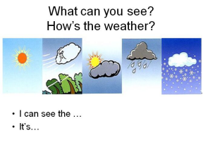
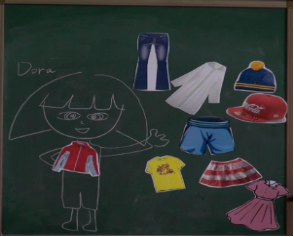

一、学情分析
本课教学对象为小学四年级学生，平均年龄十岁。他们天性活泼，有着极强的求知欲和表现欲，喜欢直观形象思维，对游戏、竞赛、肢体动作等较感兴趣。学生在二、三年级已经初步掌握了对天气和服饰的表达，并能用简单的用语进行交际，然而基础知识和技能学习间隔时间较长，单词不及时复习遗忘较快。他们学习的积极性较高，能踊跃、主动参与课堂的教学活动，并能听懂老师的简单英语指令与要求，能和老师、同伴进行简单的英语会话和合作交流。
二、教材分析
本册教材共划分为四大模块，Unit 12 Weather属于第四模块，目的在于帮助学生认识各种天气，学会描述各种天气。本课内容与之前三年级学过的内容有关，在教学过程中可与三年级上册第四模块的第12单元联系起来进行学习。本校学生从一年级开始仅学习一套教材，但本课的内容对学生来说难度不算特别大，因此会适当进行拓展学习。本课共分成三个课时，第二课时重点是能够运用句型How's the weather today?来询问天气，同时感受天气变化与生活的联系，以及根据天气可选择的活动。
三、单元设计整体思路和依据
本单元设计以学生为主体，营造轻松的学习环境，依据情景教学法、游戏教学法、交际法和综合拓展法等设计不同的课堂活动，创设情景，引导学生积极地参与课堂活动，充分展现轻松愉快的英语课堂环境。在单词的教学中，注重孩子语音的输入，强调自然拼读的应用。
四、单元目标
1. 语言知识目标：
1) 词汇：能熟练说出天气单词：cloud, rain, sun, wind.
能用合适的形容词描述相对应的天气：cloudy, rainy, sunny, windy.
2) 语音：能够熟练掌握元音字母在开闭音节单词中的发音，总结规律，正确迅速读出生词。
3) 句型：能熟练询问和描述对应季节的天气情况。
How's the weather?
It's warm and sunny.
4)应用：通过学习可以完成英语小作文。
2. 语言技能目标：
1) 听：能在图片的帮助下听懂有关天气及天气描述的录音材料；
2) 说：能在情景中正确运用语言描述天气，季节特征；
3) 读：能够运用自然拼读法拼出元音字母在开闭音节中的单词，根据所学的单词短语灵活与人交流；
4)写：能运用所学单词及句型，写一篇简短的英语小作文。
3. 学习策略目标：
1) 合作学习策略：通过合作式学习，共同完成学习任务；
2) 情景学习策略：根据提供的季节天气图，描述相应的天气；
3) 语言交际学习策略：综合运用所学的单词和句型进行交际，对于学到的知识及时地用在生活中，体现活学活用。
4. 情感态度目标：培养学生关注季节天气的变化，关爱家人提醒父母及亲人根据天气穿合适的衣服。
五、具体教学设计
本节与上节相关性分析：第一课时学习了新授单词和句型How's the weather?
It's...，这些为本节课学习描述自己喜欢的天气做好了准备。
课型：思维拓展课 综合运用课
时间：40分钟
教学内容：复习第一课时中出现的天气单词，通过师生互动、小组合作等形式学习say and act，感受天气变化与生活的关系。通过改编歌谣，描述天气和根据天气选择活动。并能用简单的句型介绍自己喜欢和不喜欢的天气。
教学目标：1. 通过Say and act的对话学习，进一步运用核心句型，同时感受天气变化与生活的关系。
2. 开展各项课堂活动，引导学生交际对话，并能用简单的句型介绍自己喜欢和不喜欢的天气。
教学重难点：本课时的重点是能够灵活运用前面所学进行交际对话和小组活动。难点在于如何在本课时渗透复习和天气有关的词汇，包括服饰和根据天气选择的活动，能对喜爱的季节进行比较完整的表达。
教学过程：
|
步骤 |
目的 |
教师活动/方法 |
学生活动/学法 |
条件/手段 |
|---|---|---|---|---|
|
Warm up |
营造英语学习的气氛，激发学生学习兴趣。 |
1.Greet : 与学生问好： How are you？ How is the weather today? 2. Sing a song. |
与老师问好 Good morning. I'm fine. It's cloudy.
|
师生互动交际法 |
|
Lead in |
1.通过图片，帮助学生复习上节课学过的天气用语和句型，为后面的交际用语作铺垫。 |
1.Quick Review: 老师展示关于天气的图片，引导全体学生来回答，快节奏复习上一节课学过的知识内容。
|
1. 全班同学集体参与，根据所看到图片说出天气单词和句型。 T：What can you see? How is the weather? S: I can see the… It's… … |
TPR |
|
2. 通过情境设置，帮助Dora在不同的天气穿不同的衣物，让课堂更加具有趣味性，引出句型：It's…I wear… |
2. Let's help (1)老师在黑板上画出Dora的人物形象，让学生猜是谁。 (2) Dora有很多衣物，老师用道具引导学生复习各种衣物的英文单词。 (3) 老师设置不同的天气场景，请学生上来根据天气帮助Dora穿不同的衣物。 (4)请学生仿照句型来说一说自己在不同的天气可以穿什么衣物。
|
2. 学生根据老师的引导，回答老师的问题，练习句型It's… I wear.. T: Look. This is Dora. She has a big dresser. She has many clothes. Let's see what she has. S:… T: But she has a problem; she doesn't know what to wear according to different weather. Can you help her? S: Yes. T: It's sunny now. What can she wear? Can she wear a jacket? S：No, it's too hot. S1: She can wear a T-shirt. T: Come and help. … |
情境教学法 语言交际法
|
|
|
Presentation |
1.通过典型图片引出不同的天气可以进行不同的活动。
|
1. Think & say 老师自身举例示范，并让几个学生也进行示范。再让学生两两互相说说自己喜欢或不喜欢某种天气的原因。
|
1.根据图片，完成对话 T: What kind of weather do you like? What can you do? What kind of weather don't you like? What can't you do? S1: I like … I can… I don't like …I can't… … |
语言交际法 发散思维法
|
|
2. 通过小组合作完成表格、回答问题，引出本课Say and act的内容，思考为什么Kitty、Ben和农夫对同样的天气有不同的感受。 |
2. Think and answer: Group work 老师呈现表格，学生完成表格后引导学生思考为什么农夫会喜欢雨天和晴天，不喜欢大风天。 |
2. 学生观看Say and act视频后进行小组讨论文中角色喜欢或不喜欢什么天气，完成表格。
|
多媒体教学法 合作学习法 |
|
|
3. 回归课本，将课本内容呈现。根据图片将课文对话内容补充完整后进行角色朗读。 |
3.Say and act 请同学们看图完成对话内容。 |
3.根据图片，完成课文对话。 |
||
|
Practice |
1.分角色朗读课文，使学生对课文更加熟悉。 |
1.引导学生读出开心的心情和不喜欢的心情，并分角色朗读课文。 |
1.老师和学生分角色朗读，愿意当Kitty的学生起立，其余演农夫，老师演Ben. |
TPR |
|
2. 创设其他职业，进步让学生思考不同职业的人对天气的态度。 |
2.老师引导学生思考卖雨伞的人、卖风筝的人和卖帽子的人会喜欢和不喜欢怎么样的天气。 |
2.T：What may they say? What weather do/don't they like? S1：I like windy days. I can sell my kites… … |
小组合作法、发散思维法 |
|
|
Consolidation |
1.通过chant，巩固根据天气选择活动，也让课堂更加具有趣味性，小组合作提高了学生参与学习活动的意识，既有利于培养学生的组织能力，又增强了同学们的团队意识和合作精神。 |
1. Let's chant. 由老师先展示chant，后让小组合作编造新的chant。
|
1.学生根据模板和示范编造新的chant，并在全班诵读。 |
小组合作法 |
|
2. 通过层层铺垫，最后达到用本课所学句型介绍自己喜欢的天气的目的。 |
2.Presentation 老师给出示范，学生朗读范文。
|
2. 学生两两互相用所学句型描述自己喜欢的和不喜欢的天气，在班上展示。 |
语言交际法
|
|
|
Homework |
1.听读课文P60；2.用今天所学的句型来描述你喜欢的天气。 |
PPT展示作业： 1. Listen to and read the text on Student's Book page 60. 2. Talk about your favorite weather. |
请学生记作业，并回家完成，下节课展示自己的作业。 |
直接教学法 |
板书设计:

